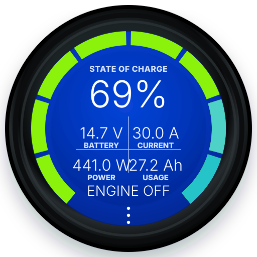
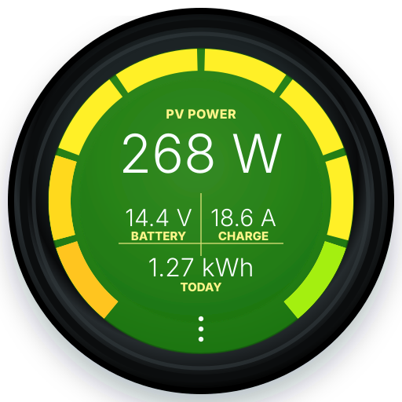

Make every screen yours
Give each connected device its own name and choose individual colours for its screen. Multiple devices of the same type can each have a clear identity.
ESP32-C3 round display firmware
A small standalone Bluetooth dashboard for battery, solar, charging, inverter, and tank data. Built for the JCZN ESP32-2424S012 round display.
£40 + postage. Built, packed, and supported as a one-person project, so availability and international delivery may take a little patience.


Beta 8
Give each connected device its own name and choose individual colours for its screen. Multiple devices of the same type can each have a clear identity.
Victron alarms now produce a visual warning and take you directly to the affected device screen. Alarm support is still being tested and should not replace the equipment's own safety systems.
Adds Victron Phoenix Inverter monitoring and support for the ABC-BMS battery family, alongside improved compatibility for Roamer and Fogstar batteries.
Improved device discovery, selection, and data handling make systems with several batteries or repeated Victron devices more reliable and easier to organise.
Beta 7
Choose the equipment fitted to your van from a clearer WiFi setup builder. Enable only the screens you need, add Victron keys where required, and keep demo mode available for previewing every screen.
Add multiple keyed Victron devices of the same type, including shunts, MPPTs, mains chargers, Orion DC-DC chargers, BatteryProtect, Lynx BMS, DC Energy Meter, and Battery Sense.
Read Mopeka and Lippert Bluetooth tank sensors without a key. Show raw centimetres, calibrated percentage, or litres remaining, with the tank arc following calibrated fill percentage.
Beta 7 uses the newer larger OTA partition layout only, giving more room for future firmware while keeping web updates, BLE capture, dimming, timeout, rotation, labels, and value grid options.
Supported devices
Victron devices need their Instant Readout key from VictronConnect. Eco-Worthy, Fogstar, Roamer, ABC-BMS family batteries, and Mopeka devices normally do not need a key.
** ABC-BMS support is new and still being tested across the different ABC, SOK, NB, and Hoover app variants.
Getting started
Power ChargeScreen using USB-C, or if you bought a rear power supply cable, carefully plug it in and make sure the notch on the cable lines up with the gap on the plug.
Tap the three dots at the bottom of the round display, then tap WiFi. Join the temporary hotspot named ChargeScreen.
Open http://192.168.4.1/ on your phone. The page is also set up as a captive portal, so many phones will offer to open it automatically.
Use Build Your Setup to pick screens, paste Victron Instant Readout keys, set charger ratings, configure Mopeka calibration, and adjust rotation, dimming, timeout, labels, and value grids.
ChargeScreen can also be powered from a rear cable that I make with a step-down converter. Carefully plug it in with the notch on the cable lined up with the gap on the plug.
The awkward bit is startup: when powered from the rear plug, the device currently needs the recessed side button pressed each time it powers on. It is a pain to reach and usually needs a small pokey stick. A 3D printed button design is in progress, but it is not ready yet.
The upside is that the device uses very little power. At 12V it draws around 0.5W, and with the screen off it drops to about 0.3W, so it can be left on 24/7 without any real issue.
Victron setup
ChargeScreen reads Victron Instant Readout Bluetooth adverts. Those adverts are encrypted, so each Victron device needs its own Instant Readout encryption data.
Victron documents Instant Readout in the VictronConnect manual. The exact wording can vary slightly between app versions and device types.
VictronConnect Instant Readout manualCompatibility testing
BLE capture records nearby Bluetooth Low Energy adverts for 5 minutes. It is useful when adding support for batteries or accessories that do not decode correctly yet.
Privacy note: the CSV may include packets from nearby watches, phones, TVs, sensors, and batteries. Most of it is encrypted or only useful to the original device, but it will still appear in the file. Battery encryption codes are only used to decode the battery packets in the capture.
Ready to use
ChargeScreen units are available premade and supplied with the firmware already installed. The device is £40, with postage added at checkout.
ChargeScreen is currently sold out, but more units are being prepared. The shop is open, so you can view the products now and check back for availability.
EU, Canada, Australia and New Zealand: the delivery price shown at checkout covers postage only. Any import VAT, customs duty, local taxes, or carrier handling charges are the buyer's responsibility and may need to be paid before delivery.
USA: Royal Mail's required customs and handling charge is included in the delivery price shown at checkout, so no separate customs payment is expected on delivery.
EU customers: from 1 July 2026, low-value parcels up to €150 imported from outside the EU may also have a €3 customs duty per item. This is separate from postage and any VAT or handling fees charged when the parcel arrives.
Want more photos? View the full ChargeScreen store.
ChargeScreen only: supplied with the firmware installed. The rear power cable is not included and is available separately.
Firmware
Latest
Moves on from beta 6.33 with the setup builder, multi-device Victron support, Mopeka tank monitoring, and the new larger OTA partition layout.
| Build | Status | Notes | Download |
|---|---|---|---|
| Latest firmware | Latest | Adds a clearer Build Your Setup flow, multi-device keyed Victron support, Mopeka tank display options, shunt refresh control, display polish, and the new larger OTA-only partition layout. | Firmware |
A quick warning
During a web firmware update, keep the device powered and wait for it to restart. Removing power during an update can leave the device needing a USB reflash.